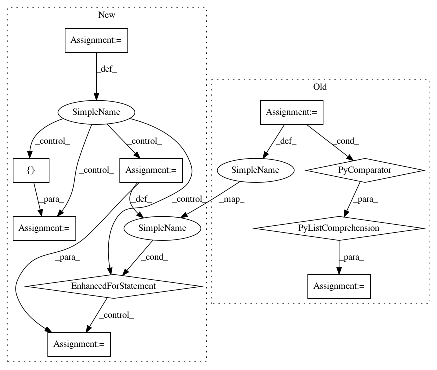

2a8e39cdf3c36048bd5279c554d4f8fd521891c6,nilmtk/stats/goodsectionsresults.py,GoodSectionsResults,import_from_cache,#GoodSectionsResults#,109
Before Change
assert group["end"].unique().size == 1
timeframe = TimeFrame(name, group["end"].iloc[0])
if timeframe in sections:
timeframes = [TimeFrame(row["section_start"], row["section_end"])
for _, row in group.iterrows()]
self.append(timeframe, {"sections": [timeframes]})
def export_to_cache(self):
After Change
for name, group in grouped_by_index:
assert group["end"].unique().size == 1
end = tz_localize_naive(group["end"].iloc[0], tz)
timeframe = TimeFrame(name, end)
if timeframe in sections:
timeframes = []
for _, row in group.iterrows():
section_start = tz_localize_naive(row["section_start"], tz)
section_end = tz_localize_naive(row["section_end"], tz)
timeframes.append(TimeFrame(section_start, section_end))
self.append(timeframe, {"sections": [timeframes]})
def export_to_cache(self):
In pattern: SUPERPATTERN
Frequency: 3
Non-data size: 10
Instances
Project Name: nilmtk/nilmtk
Commit Name: 2a8e39cdf3c36048bd5279c554d4f8fd521891c6
Time: 2014-11-26
Author: jack-list@xlk.org.uk
File Name: nilmtk/stats/goodsectionsresults.py
Class Name: GoodSectionsResults
Method Name: import_from_cache
Project Name: pytorch/benchmark
Commit Name: 5f1f52b07ff387bef8daf6ea1b378548de9ccab4
Time: 2020-09-14
Author: zdevito@fb.com
File Name: torchbenchmark/models/tacotron2/utils.py
Class Name:
Method Name: load_filepaths_and_text
Project Name: neurodsp-tools/neurodsp
Commit Name: 96e0a7454eebcc95e3c9dfdff6b3682bd23442af
Time: 2019-04-30
Author: tdonoghue@ucsd.edu
File Name: neurodsp/sim/combined.py
Class Name:
Method Name: sim_combined